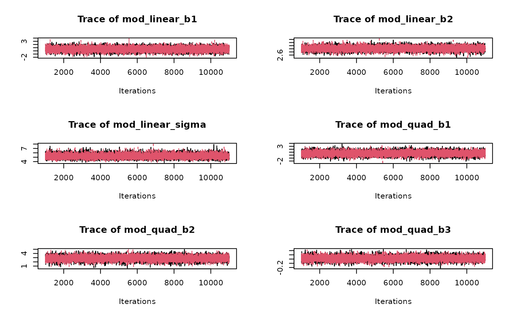
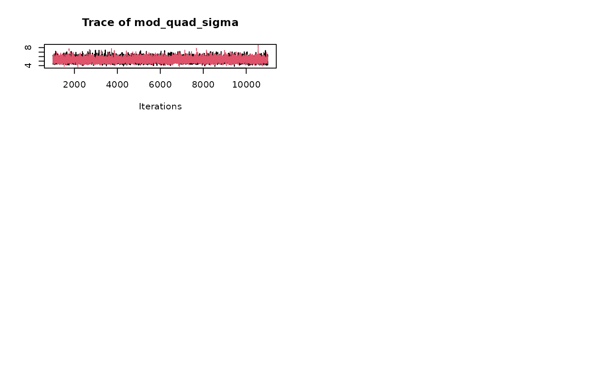
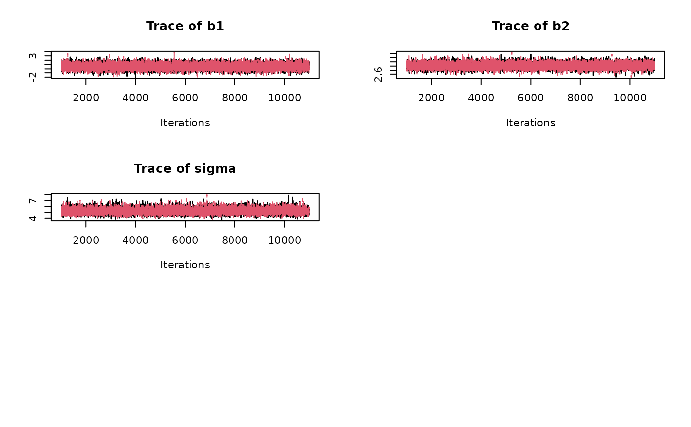

Produces traceplots for each parameter for each model.
plot_trace(x)output from a call to dreamer_mcmc().
No return value, called to create plots.
set.seed(888)
data <- dreamer_data_linear(
n_cohorts = c(20, 20, 20),
dose = c(0, 3, 10),
b1 = 1,
b2 = 3,
sigma = 5
)
# Bayesian model averaging
output <- dreamer_mcmc(
data = data,
n_adapt = 1e3,
n_burn = 1e3,
n_iter = 1e4,
n_chains = 2,
silent = FALSE,
mod_linear = model_linear(
mu_b1 = 0,
sigma_b1 = 1,
mu_b2 = 0,
sigma_b2 = 1,
shape = 1,
rate = .001,
w_prior = 1 / 2
),
mod_quad = model_quad(
mu_b1 = 0,
sigma_b1 = 1,
mu_b2 = 0,
sigma_b2 = 1,
mu_b3 = 0,
sigma_b3 = 1,
shape = 1,
rate = .001,
w_prior = 1 / 2
)
)
#> mod_linear
#> start : 2022-04-15 17:25:54.105
#> Compiling model graph
#> Resolving undeclared variables
#> Allocating nodes
#> Graph information:
#> Observed stochastic nodes: 6
#> Unobserved stochastic nodes: 3
#> Total graph size: 50
#>
#> Initializing model
#>
#> finish: 2022-04-15 17:25:54.198
#> total : 0.09 secs
#> mod_quad
#> start : 2022-04-15 17:25:54.199
#> Compiling model graph
#> Resolving undeclared variables
#> Allocating nodes
#> Graph information:
#> Observed stochastic nodes: 6
#> Unobserved stochastic nodes: 4
#> Total graph size: 59
#>
#> Initializing model
#>
#> finish: 2022-04-15 17:25:54.300
#> total : 0.10 secs
# all parameters from all models
plot_trace(output)


# from a single model
plot_trace(output$mod_linear)
